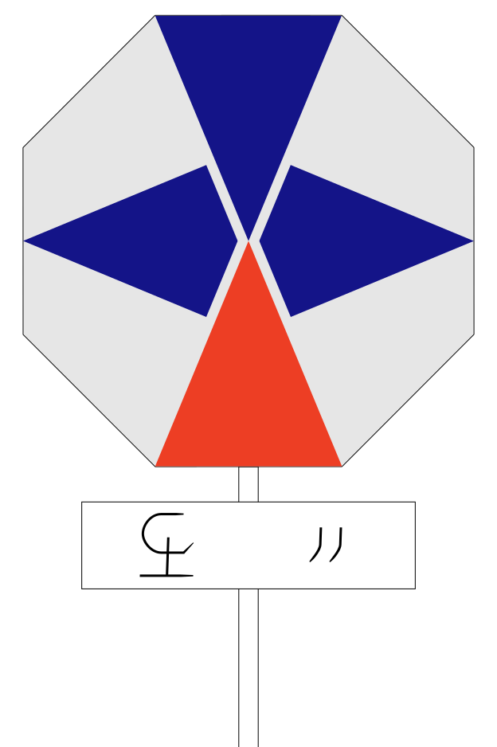

With groups come identification of groups, and with that come a class of objects termed graphical group identification device must be created. In the lands and countries of the J.-Pasaru, this device is called an ovecs /oʊ.vɛks/ (plural: ovexes /oʊ.vɛks.əs/, E.-Pasaru: žtlĭm /ʒt.lɨm/). This document describes what an ovecs is, how it is used, how one is made, and how it is different from an Earthling flag (and how similar the two can be sometimes).
Components of an ovecs

An example of an ovecs, that of Vohalyo.
An ovecs is a graphical group identification device that is primarily distinguished by the following parts, ordered by distinctiveness:
The primary board, noticeably octagonal, called a banner (E.-Pasaru: sen). Apart from its interesting eight-sided shape, it is also the largest part of the ovecs. The word “sen” in colloquial contexts can also refer to the entire flag, but in specialist speech is only ever referring to this board.
The legend (E.-Pasaru: üjebraot), a rectangular board with some letters written on it. There are some rules regarding what can be written on the board, but while it is separate from the banner, it is an essential and integral part of the ovecs and cannot be removed without justification or context.
Zero or more plates (E.-Pasaru dulĭť), each of which represent a number or a numeral. These hexagonal plates, despite appearing between the banner and the legend when used, are ancillary data to the original flag, and addition or removal of a plate assembly does not change the meaning of the flag appreciably, politically speaking. However, it does contain important information with regards to succession.
Last but not least is the pole (E.-Pasaru lëdæn), which is a vertical bar that supports the entire assembly at its centre. While it might seem to be a trifling detail to indicate that the pole is at its centre, this is in fact a very important part of what makes an ovecs an ovecs.
Three of those four items are indicated in the example ovecs as seen on the right. (There are actually real example ovexes as there are provisions to reserve some designs specifically for documentation purposes, but that’s for later.) But first, let’s go through each component in turn.